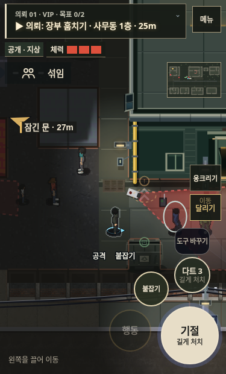
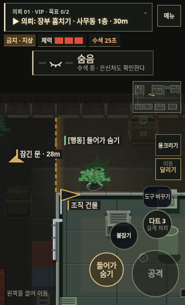
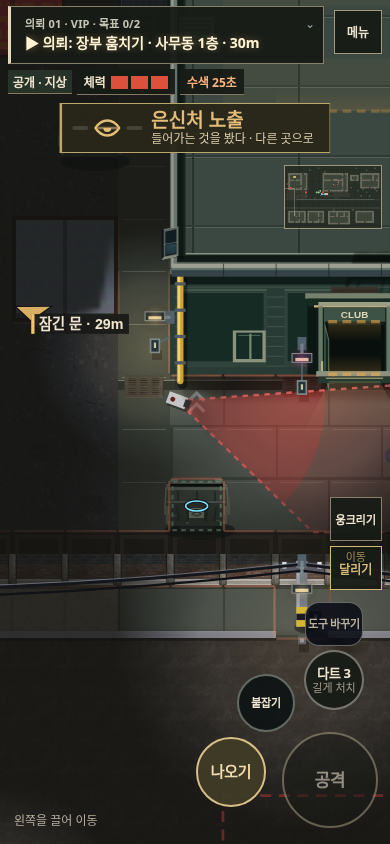
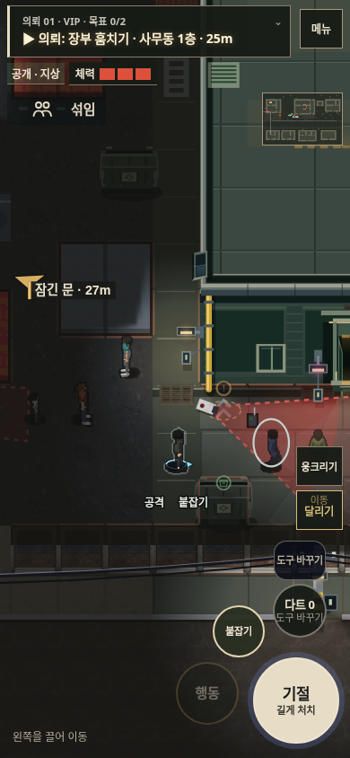
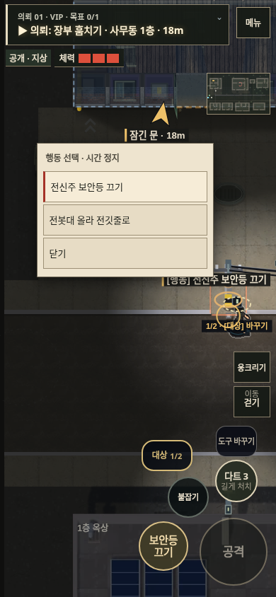
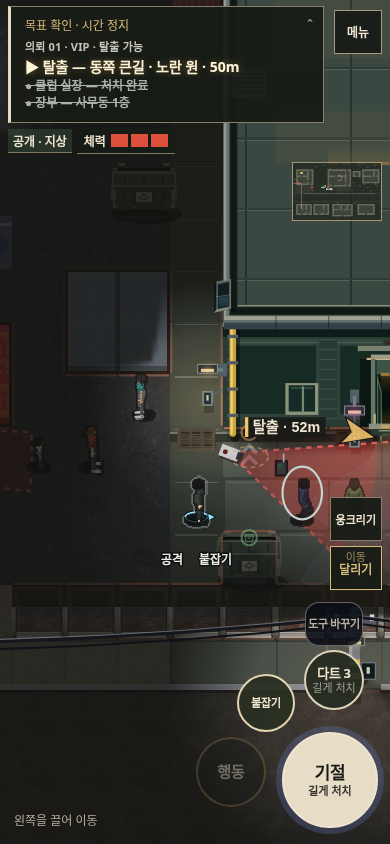

야행 v139 · 화면과 시스템을 함께 정리
2D 플레이 · 리뷰·검증 상세
짧은 세로 화면
평온 상태의 빈 경계 칸을 걷어내고, 목표 진행·체력·현재 상태를 먼저 읽게 했다. 도구와 대상 전환 버튼의 터치 영역도 키웠다.
변경 전 · 375×620
변경 후 · 375×620 가로 화면의 의뢰 문장
현재 상태와 가능한 행동

숨어도 수색 위험은 남는다
들킨 은신처 구분
잔량과 버튼 활성 상태 일치확인하는 동안은 정지, 선택과 실행은 별도

행동 목록 · 선택만으로 실행하지 않는다
전체 목표 · 완료 항목을 남긴다낮은 프레임에서도 게임 시간 유지
경과 시간을 작은 충돌 단계로 나눴다. 아래는 렌더 프레임 조건을 제어한 검사이며 실제 기기의 fps 측정이 아니다. 긴 멈춤은 제한해 한꺼번에 앞으로 뛰지 않게 했다.
| 조건 | 1초 입력의 게임 시간 | 이동 거리 |
|---|
| 60fps | 1.000초 | 99.03px |
| 30fps | 1.000초 | 99.03px |
| 15fps | 1.000초 | 99.03px |
| 10fps | 1.000초 | 99.03px |
검증 기록
PC·터치로 두 연습을 완료했다. 36개 의뢰 경로는 진행을 검증하기 위해 NPC를 고정하며, 실제 난이도 검사와는 구분한다. 표시된 사진은 통제된 화면 상태다.